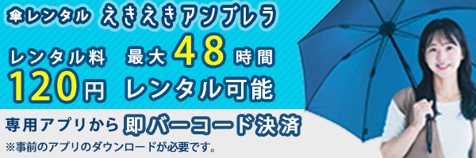
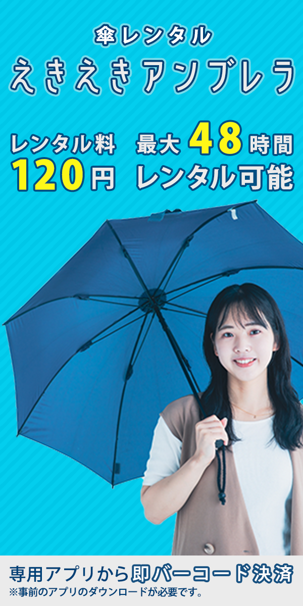

架空の傘レンタルバナー
- 学校課題
- #バナー

| 概要 | 傘レンタルのバナー広告を3サイズ（300×250、320×100、300×600）で制作しました。 |
|---|---|
| 目的 | 急な雨への対策として傘レンタルサービスの認知度向上と、新規ユーザーの利用促進を図ること。 |
| ターゲット | 20～40代の通勤・通学中のビジネスパーソンや学生。 突然の雨に備えをしておらず、コンビニでの購入を避けたい層を中心に設定しています。 |
| 制作にあたって | 明るく清潔感のあるブルーを基調に、アクセントに黄色を使い、雨の日でも安心感と親しみやすさを演出。 傘を持った女性の写真で利用シーンを視覚的に伝え、視線を引きやすくしました。 料金情報は大きく配置し、コストパフォーマンスの良さを強調。 背景の斜め線でリズムと動きを加えました。 |
| 制作期間 | 2日 |
| 使用したツール | Photoshop |

